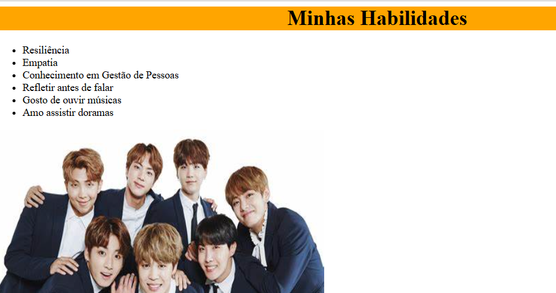

Meu nome é Gisele, tenho 20 anos e sou natural de Salvador/BA. Sou Técnica em Recursos Humanos e, atualmente, sou aluna do curso Programadores do Amanhã. Este é meu primeiro contato com a programação, e estou gostando bastante, apesar de ser desafiador aprender a programar do zero. Espero, ao final do curso, conseguir agregar os conhecimentos que tenho em Gestão de Pessoas com a Programação, utilizando da gamificação nos processos de RH.
Minha primeira atividade na PDA foi no Scratch, junto com meus colegas. A proposta foi criar um projeto no Scratch onde o personagem se movesse em várias direções e apresentasse nossos objetivos e metas para o futuro.
Acesse o link ao lado para visualizar o projeto:

A outra atividade envolveu criar nossa primeira página em HTML, adicionar uma foto e aplicar estilos com CSS.
Acesse o link ao lado para visualizar o projeto:
